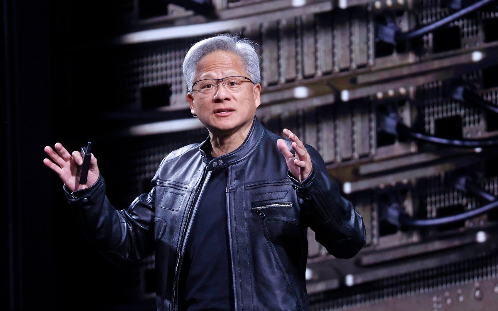

往下看，钱和算力在往哪流。
Groq 融 3.5 亿美元转型 neocloud · 从 AI 芯片制造商转向卖算力
Groq 完成 3.5 亿美元融资，估值 35 亿，正式从 AI 芯片制造商转型为 neocloud（新一代云服务商），并扩大英伟达驱动的数据中心。
Groq 曾是「挑战英伟达」的明星：自研 LPU 芯片，推理速度一度是行业标杆。但芯片创业的终局，是打不过就加入——这次融资的核心用途，是买英伟达的卡、建自己的云，把算力卖给开发者。
这不是个例。「造芯片」的壁垒高到只有英伟达能玩，曾经的挑战者开始集体转向「卖算力」：Groq 转型 neocloud，Cerebras 也在做云服务。芯片战场的输家，正在变成云市场的玩家。
当挑战者开始卖英伟达的卡，「AI 芯片战争」的结局已经写了一半——真正的战场从「造芯片」转移到了「谁把算力卖得更好」。

Nvidia 投 15 亿美元给软银数据中心开发商 · OpenAI 项目背后
Nvidia 向软银旗下的数据中心开发商投资 15 亿美元——这家公司正是 OpenAI 数据中心项目的承建方。
这笔投资的意义不在钱，在绑定：英伟达15 亿换一个「我的芯片进 OpenAI 数据中心」的保证。算力供应链正在从「买卖关系」变成「股权关系」。
对 OpenAI 来说，数据中心是它摆脱对单一云厂商依赖的关键一步；对英伟达来说，投资承建商 = 提前锁死未来几年的芯片订单。算力军备的下一层，是资本绑定。
当芯片厂开始投资数据中心开发商，「谁给谁供芯片」不再是一纸合同，是股权上的一家人。
AirTag 追踪证实：亚马逊把珍本图书销毁，喂给 AI 训练
记者在一批珍本图书里藏了 AirTag，追踪发现它们最终被送进 亚马逊 的 AI 训练设施——这家从卖书起家的公司，正在销毁珍本书来训练模型。
为什么是珍本书？网上能抓到的文本，模型早就训练过了；珍本书里的内容稀缺、未数字化，是「增量数据」——对训练高质量模型价值极高。
争议在于：这些书是图书馆和收藏家的资产，被亚马逊买走或借走，然后销毁。书商和藏书界愤怒：为了 AI 的「数据饥饿」，人类的文化遗产正在被物理消灭。
当 AI 训练的数据需求撞上实体文化遗产，「数据饥饿」第一次有了物理代价——被销毁的书，不会再回来。
Anthropic 公布 Claude 文本水印（SynthID 式）的工作原理：不是藏字，是藏在「选词概率」里。
机制：模型生成每个词时，在概率分布里做「有偏采样」——某些词被系统性地多选或少选，形成统计指纹。人眼看不出任何区别，但检测器能通过统计检验识别。
为什么重要：这是「AI 内容可溯源」从口号变成工程的第一步。当水印可检测，AI 生成的文本第一次有了「身份证」——防伪造、防滥用、防深度伪造文本。
局限也诚实：改写、翻译、重排都能破坏水印，它不是万能的，但足以让「AI 生成内容」在多数场景可被识别。当 AI 内容开始带指纹，「这到底是不是 AI 写的」第一次有了可验证的答案。
DeepSeek 发布 DeepSeek Harness 开发者预览版：MIT 许可的 agent 框架，核心设计是「一切皆插件」。
它解决的是 agent 开发的碎片化问题：工具、模型、记忆、执行器全部插件化，开发者不用重写框架，只写自己的插件。MIT 许可意味着可以商用、可以改、可以闭源。
DeepSeek 的开源节奏在加速：模型开源 → 推理框架开源 → 现在 agent 框架开源。它赌的是「开源生态反哺模型采用」——用你的框架，自然用你的模型。
当中国模型厂商从「开源模型」卷到「开源 agent 框架」，开源战场的定义再次被拓宽——不只是模型，是整个开发栈。
MiniMax 发布 MiniMax-Music3 开源权重：从歌词和结构化描述生成最长 5 分钟的完整歌曲，输出 32kHz 立体声。
架构是「多模块」：8B 全局 LLM + 0.6B 局部 LLM + 2.4B flow-matching 模块 + 123M Flow-VAE。开源意味着本地能跑，不用上传、不用排队、不用按次付费。
对比 Suno、Udio 的付费订阅，开源音乐模型赌的是「创作者生态」：更多人用 → 更多人改进 → 模型迭代更快。创作者第一次能「拥有」自己的 AI 配乐工具。
当开源从「模型参数」卷到「创作工具」，开源战场的定义被拓宽——不再专属开发者，每个创作者都能摸到。
PixVerse 启动全球 AI 电影人竞赛 PixLight，面向全球创作者征集 AI 短片。
同场还有 Grok Imagine 的荷马史诗短片大赛（头奖 10 万美元）。AI 视频从「个人玩票」进入「有奖竞赛」阶段——平台用奖金换优质内容，创作者用 AI 工具换曝光。
MiniMax H3 模型在 PixVerse 上被大量用于电影级预告片制作，「AI 电影」的质感正在逼近传统预告片。当生成工具成熟，门槛从「会不会做」变成「有没有想法」。
当平台开始为 AI 短片发奖金，AI 电影工业化的第一块拼图——「变现路径」——正在被拼上。
新一代世界模型实现 24FPS 画面 + 48kHz 立体声的实时生成，即将完全开源。
此前世界模型只能生成无声画面，声音是后期配的。「有声」意味着模型开始理解「声音和画面同时发生」的世界——雨声跟着雨、脚步声跟着人，这是世界模型从「视觉模拟器」走向「世界模拟器」的关键一步。
实时生成的意义更大：交互式世界不再是「生成一段视频」，是「生成一个能响应的世界」——游戏、电影、训练模拟，都在这条线上。
当世界模型开始「听见」，AI 对世界的模拟从「看」进化到「听」——离真正的世界模拟器，又近了一步。
Wispr 完成 2.8 亿美元融资，估值 20 亿——这家以语音输入（dictation）起家的公司，正在向会议场景扩张。
Wispr 的路径很典型：从一个「小而锋利」的工具（语音输入）切入，融到钱后向相邻场景扩张——刚发布的会议记录工具，是它从「打字」到「开会」的第一步。
语音输入是 AI 应用里少有的「高频刚需」场景：谁掌握了语音入口，谁就掌握了「说话比打字快」的那批用户。20 亿估值说明资本认可这个入口的价值。
当语音工具公司开始融 2.8 亿做会议，「AI 语音」从输入法级别的工具，正在变成办公场景的基础设施。
“Stripe 收购 OpenRouter，本质是「聚合 AI」——
所有模型从同一入口出去，入口的所有者就掌握定价权。”
— Ben Thompson · Stratechery · Stratechery
“教每个人「钓 token」——
理解 token 经济学，比理解模型架构更重要。”
— Nathan Lambert · Interconnects · Interconnects
今天的关键词是「算力军备」：芯片公司打不过英伟达，转行去卖英伟达的算力；英伟达 15 亿锁死 OpenAI 的数据中心。
数据也在变贵：亚马逊销毁珍本书喂 AI，AI 训练的数据饥饿第一次有了物理代价。
当算力和数据都开始「锁死」，AI 竞争的下半场，拼的是谁先握住资源。
巴塔哥尼亚的 Tyndall 冰川 · 智利——冰崩后散落的碎冰浮在 Lago Geikie 湖面，一片正在以每年数公里速度退去的冰。

Tyndall 冰川 · 巴塔哥尼亚 · NASA 卫星拍下 51.0°S, 73.3°W
冰川以每年数公里的速度退去，碎冰散落在湖面，像一场缓慢的告别。我们在屏幕上争论谁收购谁、谁的模型更强，这片冰正按自己的节奏融化，不问任何人的意见。看了一天 AI 的新闻，地球上还有不需要 GPU 冷却的地方。山川湖海，让我们保持好奇、继续探索。